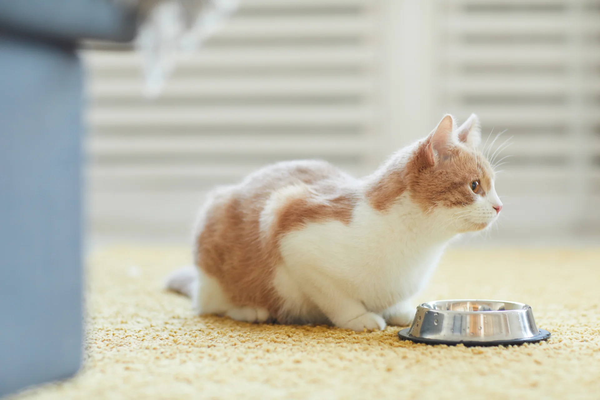

Cuidados Felinos
Tu Guía para un Gato Saludable

Cuidados Felinos
Tu Guía para un Gato Saludable

Cuidados Felinos
Tu Guía para un Gato Saludable
Tu Guía para un Gato Saludable
Tu Guía para un Gato Saludable
Tu Guía para un Gato Saludable
La socialización temprana en gatos es un proceso crucial que tiene un impacto significativo en el desarrollo de su personalidad, comportamiento y bienestar a lo largo de su vida.
El aburrimiento en los gatos puede llevar a comportamientos no deseados, como arañar muebles, rasgar cortinas o incluso orinar fuera de la caja de arena.
El manejo del estrés en gatos es esencial para garantizar su bienestar emocional y físico. Los gatos son criaturas sensibles y pueden experimentar estrés debido a una variedad de situaciones y factores.
La nutrición y el control de peso son esenciales para la salud y la longevidad de tu gato. Mantener una dieta equilibrada y controlar el peso de manera adecuada son responsabilidades fundamentales como dueño de un gato.
La vacunación y la desparasitación son medidas cruciales para prevenir enfermedades y proteger la salud de tu gato. Estas prácticas no solo benefician a tu mascota, sino que también ayudan a prevenir la propagación de enfermedades zoonóticas y a mantener un entorno más saludable para tu familia y otros animales.
La falta de atención a la higiene del pelo y el arenero de tu gato puede conllevar a una serie de problemas que afectan tanto a la salud del felino como a la armonía en tu hogar.
Los gatos, a pesar de su fama de independientes, requieren vínculos emocionales y estimulación mental para mantener su salud mental y emocional. La ausencia de estos cuidados puede conducir a problemas de comportamiento, obesidad, estrés y otros trastornos que afectan su calidad de vida.
Si tu gato muestra signos de enfermedad, como cambios en el apetito, la actividad o el comportamiento, es importante llevarlo al veterinario de inmediato.